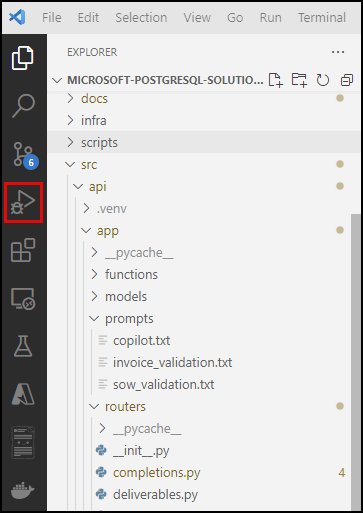
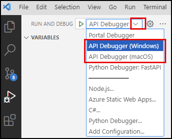
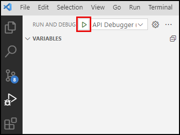
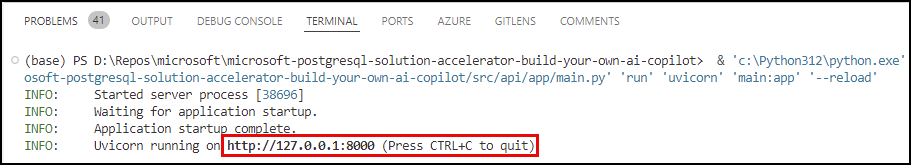
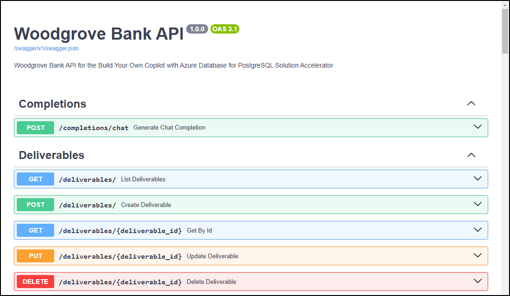
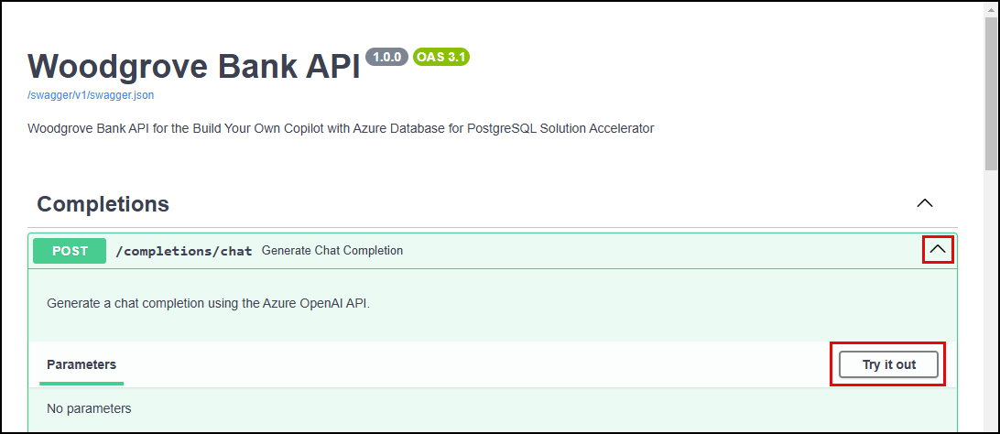
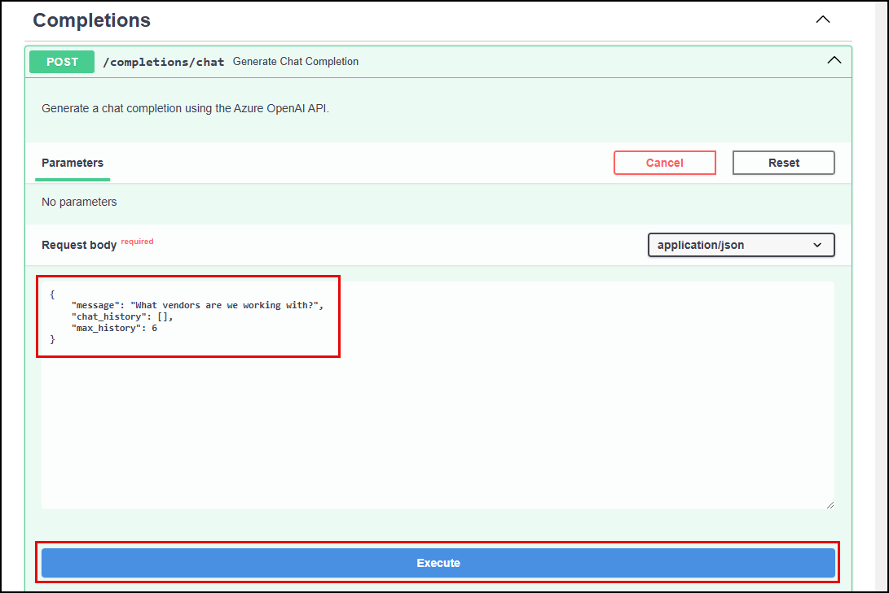
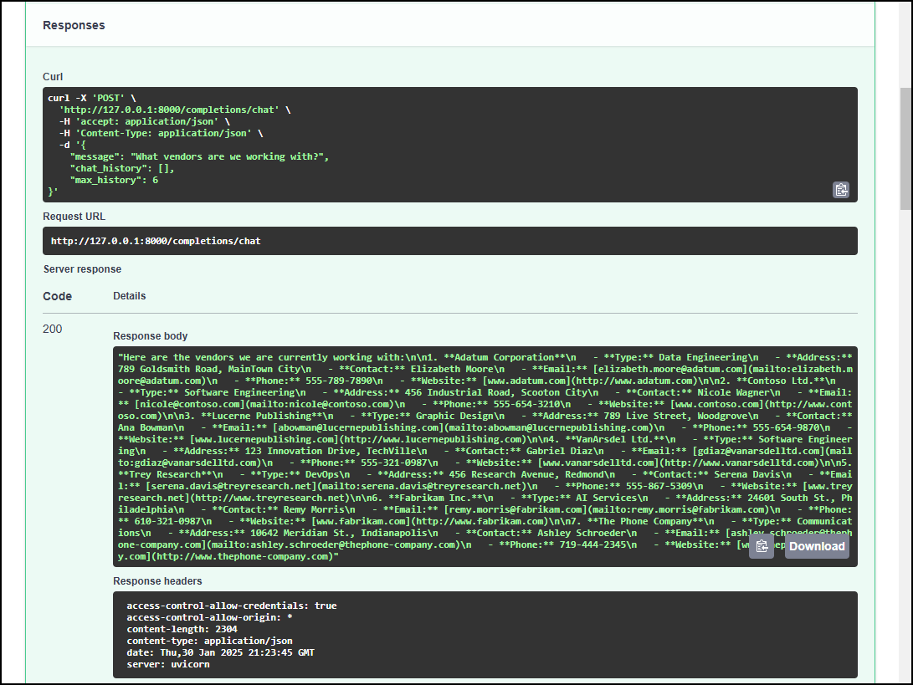

5.5 Test the Chat API¶
Now, all you need to do is run the FastAPI server and have it listen for incoming client requests on the API's completions/chat route. In this next section, you will see how to do this locally for rapid prototyping and testing.
Testing Options¶
The Chat API is deployed against the /completions/chat endpoint. So, how can you test this?
- You can use a third-party client to
POSTa request to the endpoint - You can use a
CURLcommand to make the request from the command line -
You can use the built-in
/swaggerSwagger UI to try it out interactivelySwagger UI
Recall that the
src/api/app/main.pyfile contained the definition for the FastAPI application. In that definition, the default documentation endpoint for the API was modified to use the more common/swaggerpath.
Test with Swagger¶
The Swagger UI provides an easy and intuitive way to test your endpoints rapidly. A side benefit of this approach is it shows you the curl command you can use to make the same request from the terminal if you want to try that out later.
-
In Visual Studio Code, select the Run and Debug icon from the Activity Bar on the left-hand side.

-
At the top of the Run and Debug menu, select the API Debugger option for your OS from the debug configurations dropdown list.

-
Select the Start Debugging button (or press F5 on your keyboard).

-
Once the API debugging session has started, indicated by an
Application startup complete.message in the terminal output, followed by the URL on which Uvicorn is running, open the local API URL in a web browser (http://127.0.0.1:8000/).
-
Append
/swaggerto the URL to get the Swagger UI interactive testing page.
-
Expand the
POSTsection for thecompletions/chatendpoint under the Completions tag and selectTry it out:
-
In the Request body section, paste the following JSON snippet to request a list of vendors, then select Execute.
json { "message": "What vendors are we working with?", "chat_history": [], "max_history": 6 }
-
Scroll down to the Responses section for the
/completions/chatendpoint in the Swagger UI and verify you received a valid response.
View server execution traces in the VS Code console.
By running a debug session in VS Code, you can see the server execution traces of a request to the Chat endpoint in the Visual Studio Code console. These traces allow you to observe the agent scratchpad output from your LangChain agent, which can be useful in troubleshooting and understanding how the agent works.
VS Code terminal with LangChain output 1 2 3 4 5 6 7 8 9 10 11 12 13 14 15 16 17 18 19 20 21 22 23 24 25 26 27 28 29 30 31 32 33 34 35 36 37 38 39 40 41 42 43 44 45 46 47 48 49 50 51 52 53 54 55 56 57 58 59 60 61 62 63
> Entering new AgentExecutor chain... Invoking: `get_vendors` with `{}` [{'id': 1, 'name': 'Adatum Corporation', 'address': '789 Goldsmith Road, MainTown City', 'contact_name': 'Elizabeth Moore', 'contact_email': 'elizabeth.moore@adatum.com', 'contact_phone': '555-789-7890', 'website': 'http://www.adatum.com', 'type': 'Data Engineering'}, {'id': 2, 'name': 'Contoso Ltd.', 'address': '456 Industrial Road, Scooton City', 'contact_name': 'Nicole Wagner', 'contact_email': 'nicole@contoso.com', 'contact_phone': '555-654-3210', 'website': 'http://www.contoso.com', 'type': 'Software Engineering'}, {'id': 3, 'name': 'Lucerne Publishing', 'address': '789 Live Street, Woodgrove', 'contact_name': 'Ana Bowman', 'contact_email': 'abowman@lucernepublishing.com', 'contact_phone': '555-654-9870', 'website': 'http://www.lucernepublishing.com', 'type': 'Graphic Design'}, {'id': 4, 'name': 'VanArsdel Ltd.', 'address': '123 Innovation Drive, TechVille', 'contact_name': 'Gabriel Diaz', 'contact_email': 'gdiaz@vanarsdelltd.com', 'contact_phone': '555-321-0987', 'website': 'http://www.vanarsdelltd.com', 'type': 'Software Engineering'}, {'id': 5, 'name': 'Trey Research', 'address': '456 Research Avenue, Redmond', 'contact_name': 'Serena Davis', 'contact_email': 'serena.davis@treyresearch.net', 'contact_phone': '555-867-5309', 'website': 'http://www.treyresearch.net', 'type': 'DevOps'}, {'id': 6, 'name': 'Fabrikam Inc.', 'address': '24601 South St., Philadelphia', 'contact_name': 'Remy Morris', 'contact_email': 'remy.morris@fabrikam.com', 'contact_phone': '610-321-0987', 'website': 'http://www.fabrikam.com', 'type': 'AI Services'}, {'id': 7, 'name': 'The Phone Company', 'address': '10642 Meridian St., Indianapolis', 'contact_name': 'Ashley Schroeder', 'contact_email': 'ashley.schroeder@thephone-company.com', 'contact_phone': '719-444-2345', 'website': 'http://www.thephone-company.com', 'type': 'Communications'}]Here are the vendors we are currently working with: 1. **Adatum Corporation** - **Type:** Data Engineering - **Address:** 789 Goldsmith Road, MainTown City - **Contact:** Elizabeth Moore - **Email:** [elizabeth.moore@adatum.com](mailto:elizabeth.moore@adatum.com) - **Phone:** 555-789-7890 - **Website:** [www.adatum.com](http://www.adatum.com) 2. **Contoso Ltd.** - **Type:** Software Engineering - **Address:** 456 Industrial Road, Scooton City - **Contact:** Nicole Wagner - **Email:** [nicole@contoso.com](mailto:nicole@contoso.com) - **Phone:** 555-654-3210 - **Website:** [www.contoso.com](http://www.contoso.com) 3. **Lucerne Publishing** - **Type:** Graphic Design - **Address:** 789 Live Street, Woodgrove - **Contact:** Ana Bowman - **Email:** [abowman@lucernepublishing.com](mailto:abowman@lucernepublishing.com) - **Phone:** 555-654-9870 - **Website:** [www.lucernepublishing.com](http://www.lucernepublishing.com) 4. **VanArsdel Ltd.** - **Type:** Software Engineering - **Address:** 123 Innovation Drive, TechVille - **Contact:** Gabriel Diaz - **Email:** [gdiaz@vanarsdelltd.com](mailto:gdiaz@vanarsdelltd.com) - **Phone:** 555-321-0987 - **Website:** [www.vanarsdelltd.com](http://www.vanarsdelltd.com) 5. **Trey Research** - **Type:** DevOps - **Address:** 456 Research Avenue, Redmond - **Contact:** Serena Davis - **Email:** [serena.davis@treyresearch.net](mailto:serena.davis@treyresearch.net) - **Phone:** 555-867-5309 - **Website:** [www.treyresearch.net](http://www.treyresearch.net) 6. **Fabrikam Inc.** - **Type:** AI Services - **Address:** 24601 South St., Philadelphia - **Contact:** Remy Morris - **Email:** [remy.morris@fabrikam.com](mailto:remy.morris@fabrikam.com) - **Phone:** 610-321-0987 - **Website:** [www.fabrikam.com](http://www.fabrikam.com) 7. **The Phone Company** - **Type:** Communications - **Address:** 10642 Meridian St., Indianapolis - **Contact:** Ashley Schroeder - **Email:** [ashley.schroeder@thephone-company.com](mailto:ashley.schroeder@thephone-company.com) - **Phone:** 719-444-2345 - **Website:** [www.thephone-company.com](http://www.thephone-company.com) > Finished chain.In the trace above:
-
Line 1 shows the
AgentExecutorchain starting. -
Lines 3-5 show the agent invoking the
get_vendorsmethod and outputting the results into an array of vendor data. -
Lines 7-61 show the response from the LLM in markdown format.
-
Line 63 shows the
AgentExecutorchain has finished.
-
-
Stop the API debugger in VS Code.
You have successfully tested your /chat API endpoint!